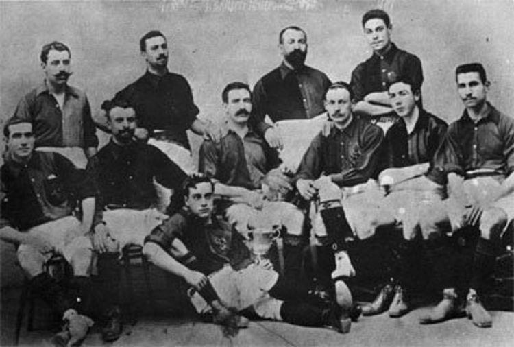
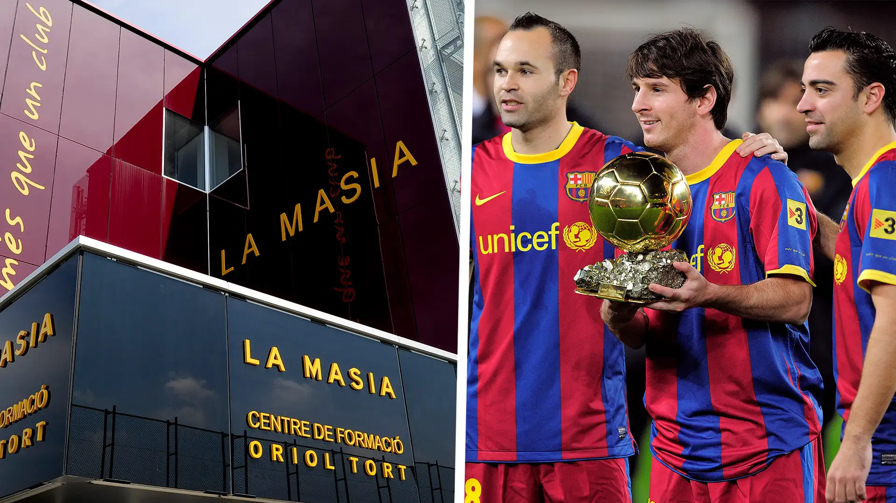
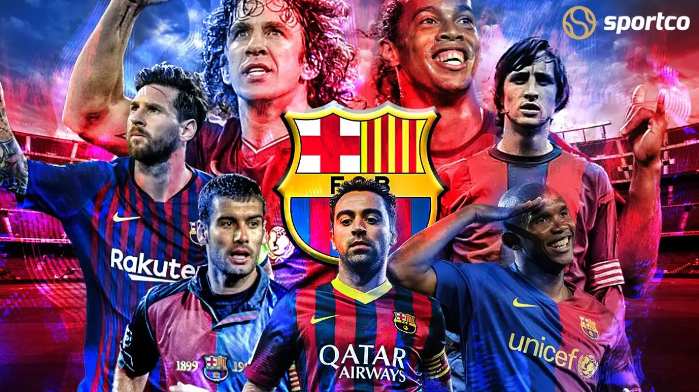

Barcelona adalah sebuah klub besar Eropa yang berasal dari Spanyol lahir pada 29 November 1899 ini dibentuk oleh Hans Gamper. Pembentukan FC Barcelona berawal ketika Gamper menaruh iklan di koran Los Deportes pada Oktober 1899, di mana ia ingin mendirikan klub sepak bola dengan mencari pemain berbakat dan professional. Dari iklan tersebut, Gamper mengumpulkan 11 pemain dan terbentuk klub yang saat itu bernama Foot-Ball Club Barcelona. Tak butuh waktu lama, Barca langsung menuai sukses di era kompetisi regional, yaitu Campionat de Catalunya dan Copa del Rey. Pada tahun 1902, Barca memenangi trodi pertama di tahun 1902, yaitu Copa Macaya.Perjalanan Barcelona tak selalu mulus. Los Blaugrana sempat dirundung masalah finansial usai menjadi juara Campionat de Catalunya musim 1904-1905.Tiga tahun tanpa gelar dan terus mendapat masalah keuangan, akhirnya Joan Gamper yang menjadi pendiri Barcelona ditunjuk menjadi presiden klub.Kemudian pada era 1910-an, Barca pun menjadi simbol dari daerah Catalan, yang mereka pertahankan hingga sekarang.

Kesuksesan dan Prestasi Barcelona
Tentu saja kesuksesan Barca tentu tidak lepas dari peran penting seorang Joan Gamper. Tidak hanya mengantarkan Barca terus meraih juara, pria asal Swiss ini juga menyelamatkan Barca dari kebangkrutan dan membangun stadion baru bagi Barcelona. Barcelona juga pernah menyabet gelar Sextuple yaitu menjuarai 6 dari 6 kompetisi sekaligus, selain itu Barcelona juga telah memiliki 5 trofi Uefa Champions League
La Masia
La Masia sendiri adalah nama akademi milik Barcelona, akademi sepakbola ini cukup terkenal di kancah dunia, hal ini dikarenakan banyaknya lulusan La Masia yang sukses menggemparkan dunia, salah satu contoh besarnya adalah Lionel Messi, Andres Iniesta, dan Xavi Hernandez, ketiganya adalah lulusan La Masia yang berhasil masuk nominasi Ballon D'orr pada 2010

Pemain Legenda
Ada banyak pemain legenda di Barcelona ini, contohnya seperti Ronaldinho, Ronald Koeman, Rivaldo, Eto'o, dan masih banyak lagi nama besar lainnya

Pemain Terfavorit
Teruntuk saya sendiri, Lionel Messi akan selalu menjadi pemain terfavorit bagi saya dan fans barcelona juga tentunya, selain Messi, tidak lupa juga dengan nama besar seperti Neymar, Suarez, Iniesta, Xavi, Puyol dll